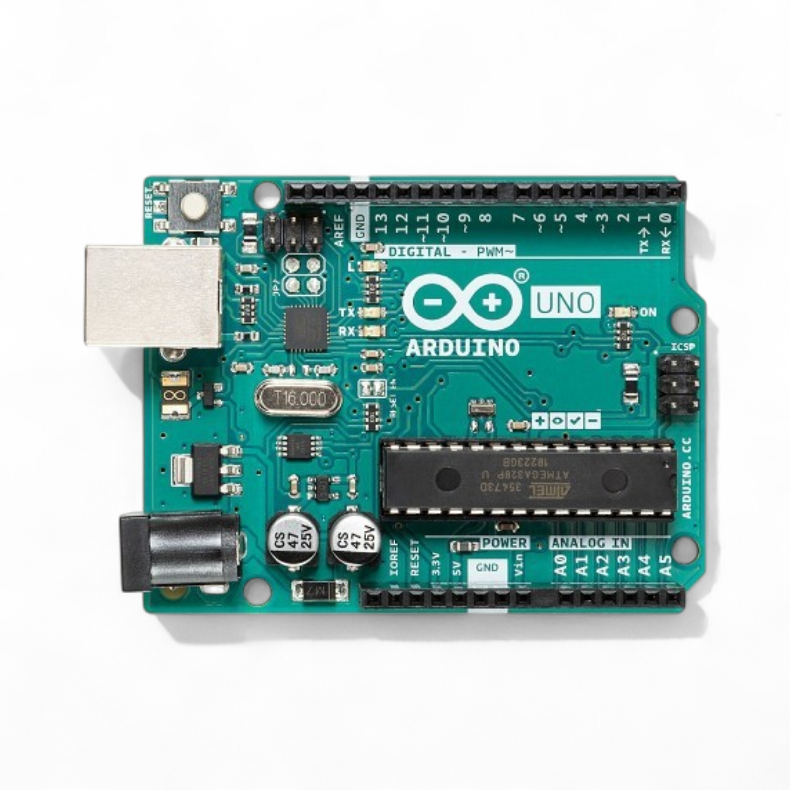

From greenhouse ideas to simple microcontroller circuits
| Day | Main Theme | What students will do |
|---|---|---|
| 1 | CEA discovery | Learn indoor farming basics, tour facilities, and form teams. |
| 2 | Sensors and IoT | Connect sensors to Arduino/Raspberry Pi and collect simple data. |
| 3 | Imaging systems | Use Raspberry Pi cameras and explore image-based plant monitoring. |
| 4 | Lighting, IoT, and ML | Discuss plant lighting and present group ideas for real applications. |
What we will build, explore, and present during camp.
Digital pins, analog pins, inputs, outputs, and circuits.
Groups of four start discussing project ideas.
A microcontroller is a small computer that connects the physical world to code.

Digital pins read or write ON/OFF signals.
Analog pins read changing sensor voltages.
Power pins provide 5V or 3.3V to components.
GND completes the circuit path.
Digital signal: only two states.
LED · button · relay · buzzer · pump switch
void setup() {
pinMode(13, OUTPUT);
}
void loop() {
digitalWrite(13, HIGH); // LED on
delay(1000);
digitalWrite(13, LOW); // LED off
delay(1000);
}A button can tell Arduino whether a user has pressed something.
In CEA, the same idea applies to simple switches: water-level float switch, door switch, or safety switch.
const int buttonPin = 2;
void setup() {
pinMode(buttonPin, INPUT_PULLUP);
Serial.begin(9600);
}
void loop() {
int buttonState = digitalRead(buttonPin);
Serial.println(buttonState);
}Analog input: reads a range of voltages instead of only ON/OFF.
Arduino Uno converts 0–5V into numbers from 0 to 1023.
light sensor · temperature sensor · moisture sensor · potentiometer
Voltage → Digital bit value:
ADC value = Vin / Vref × (2N − 1)
For Arduino Uno: N = 10, Vref = 5V
ADC value = Vin / 5 × 1023
ADC value → calibration equation → readable sensor data
Example sensor: TMP36 temperature sensor.
The sensor outputs a voltage that changes with temperature. Arduino first reads the voltage as a number from 0 to 1023, then converts it into temperature.
Step 1: Convert ADC value to voltage
V = sensorValue × 5.0 / 1023
Step 2: Convert voltage to temperature
Temperature, °C = (V − 0.5) × 100
Example: if sensorValue = 153, then V ≈ 0.75V and temperature ≈ 25°C.
const int sensorPin = A0;
void loop() {
int sensorValue = analogRead(sensorPin);
// Convert Arduino analog value to voltage
float voltage = sensorValue * (5.0 / 1023.0);
// TMP36 conversion:
// 0.5V = 0°C, and each 0.01V = 1°C
float temperatureC = (voltage - 0.5) * 100.0;
Serial.print("ADC value: ");
Serial.print(sensorValue);
Serial.print(" | Voltage: ");
Serial.print(voltage);
Serial.print(" V | Temperature: ");
Serial.print(temperatureC);
Serial.println(" °C");
delay(500);
}| Feature | Digital Pin | Analog Pin |
|---|---|---|
| Signal type | Two states | Many possible values |
| Arduino command | digitalRead(), digitalWrite() | analogRead() |
| Example input | Button pressed or not pressed | Light intensity or temperature level |
| Example output | Turn LED or relay on/off | PWM dimming uses selected digital pins |

Demo: Blink an LED With Digital Output
https://www.tinkercad.com/circuits
Try changing the code:
digitalWrite(13, HIGH);
delay(1000);
digitalWrite(13, LOW);
delay(1000);Change 1000 to 500, 200, or 2000.
Question: How does the blinking speed change?
Think like engineers: